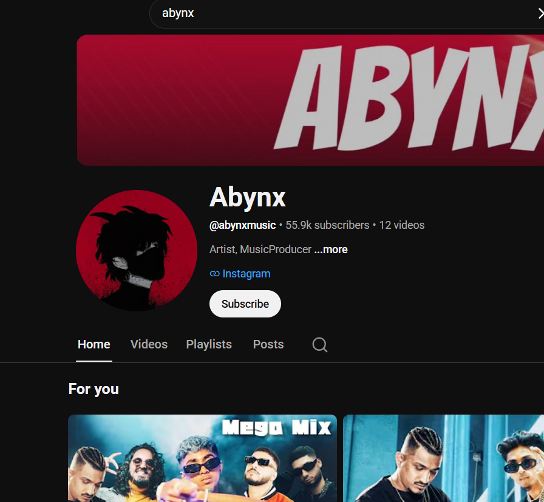

Live show frames
Lighting, motion, and crowd-facing staging.
Lighting, motion, and crowd-facing staging.
Abynx has built an audience of 55K+ subscribers and amassed over 15M+ views on his channel, where he first gained recognition for remixing his original beats with acapellas from various Indian rap artists and creating unique remix projects.

With time, Abynx discovered a passion for songwriting. Although he was initially insecure about his voice, he chose to step outside his comfort zone and pursue rap—eventually creating his own original music and developing his unique artistic identity.